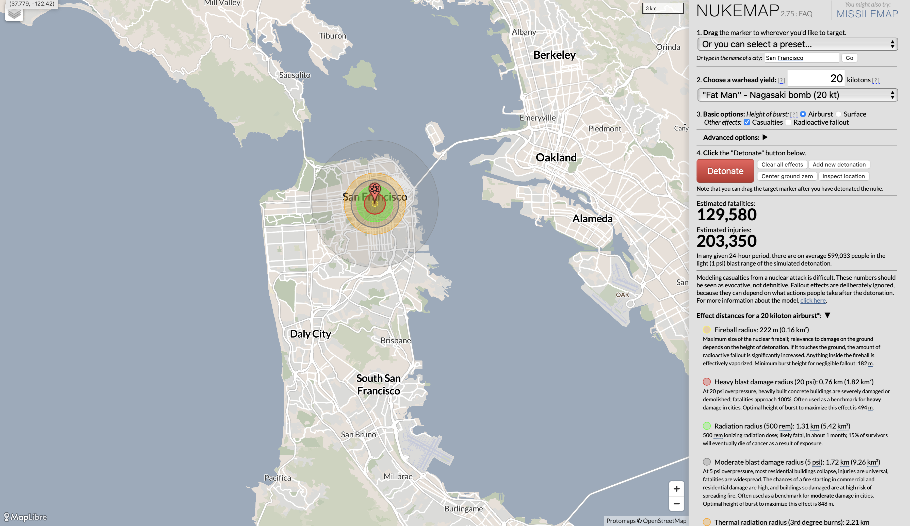

Comparative Analysis
May 13, 2025
This compariative analysis gives an insight into the level of impact i'm trying to leave on people. Both of these projects uses data and research to make predictions about the future.

Project 1: Doomsday Clock
The Doomsday Clock created by the Bulletin of Atomic Scientists, protrays the time remaining to our doomsday. The shorter the time, the more in danger the Earth is of reaching a point of irreversable destruction. These paramenters are based on the current happeninings such as politcal tensions, environmental concerns, and wars. Through the interactive tool, you can see a timelime of how the doomsday clock has been adjusted over the years. At the writing of this, it's now currently set to the lowest time reamining ever so far; 89 seconds.
Project 2: Nukemap
The Nukemap project created by Luke Wellerstein in 2015, is an interactive web tool that uses data to display the impact of a bomb is at almost any given location. This projects plays into a Nuclear anxiety that people have, it's meant to simulate a total catastrophe, which portrays a level of dystopia. Through the data conained of each potential bombing, you can see the catastrophic effect of weapons. This interactive tool is designed to desescalte situations and call attention to the reality of mutually assured destruction.